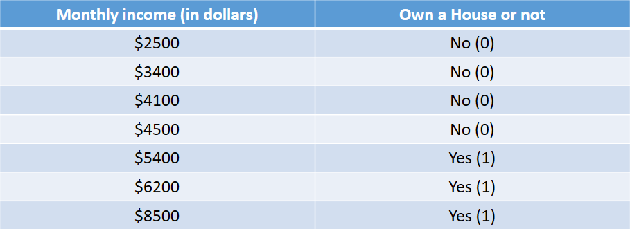
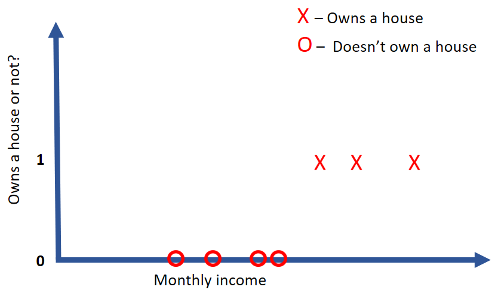
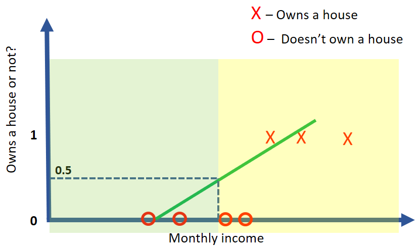
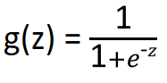
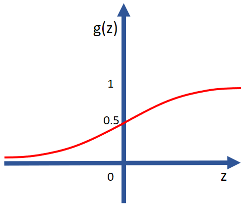
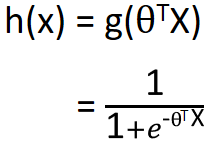

HOME BLOG EBOOKS ABOUT CONTACT SHOP
The second type of Supervised learning algorithm we will look into is called the Logistic Regression. First things first, it is not a regression algorithm as its name suggests, rather it’s used for classification problems. But the name comes from the fact that classification is done by considering the linear regression model.
As mentioned earlier, Classification methods are used in problems where we want to label or categorize inputs. In this section we will be dealing with binary classification problems (those with 2 possible outcomes).
For ease of understanding, we will consider this simple example.

Our goal is to predict whether a person with a certain monthly income (say $7000) would own a house or not based on our data set (which I made up).
All the notations from linear regression is applicable here as well.
The graph corresponding to out data set would be as shown below.

Since linear regression is the only algorithm you are familiar with at this point, let try solving this problem using it. You could try fitting the data with a straight line and use a threshold (say 0.5 ) to classify the data (like in the graph below). In theory it should work and it does in some cases, but this isn’t really the best approach because even a few off data points can mess with the predictions big time.

For Logistic regression, ideally we would want a hypothesis function which outputs values only between 0 and 1. So what we can do is to make a slight modification to the linear regression hypothesis function, such that it is suitable for logistic regression. This modification comes in the form of something called the sigmoid function.
The sigmoid function, also called the Logistic function is an S-shaped mathematical function having values between 0 and 1.
Mathematically, the sigmoid function is defined as:

For large positive values of z, the exponential approaches zero and the function as a whole approaches one. For large negative values of z, the denominator approaches infinity and the function approaches zero.

So the Logistic regression hypothesis function is simply the sigmoid of the linear regression hypothesis function.
